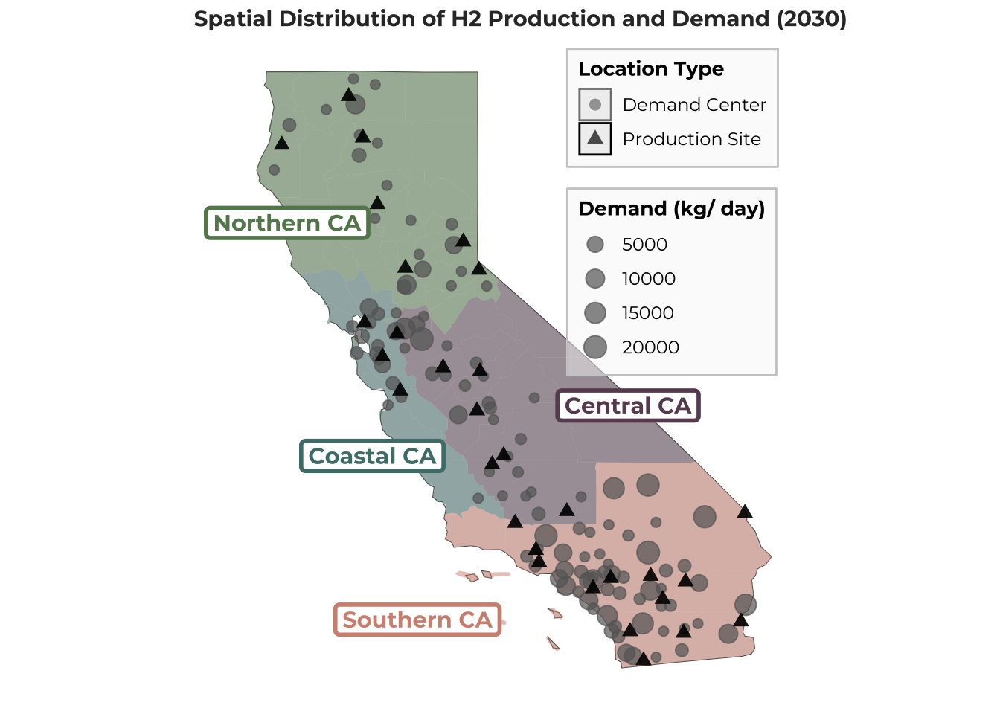
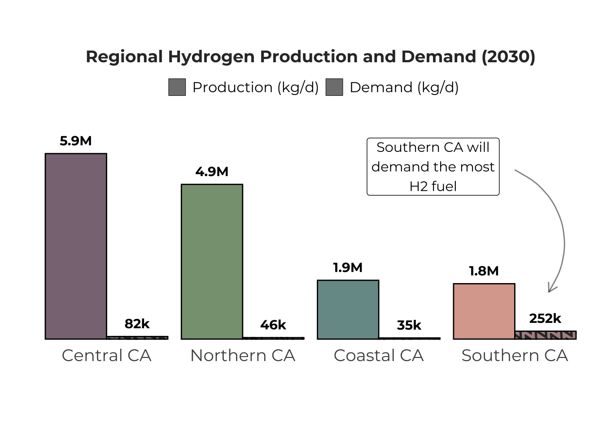
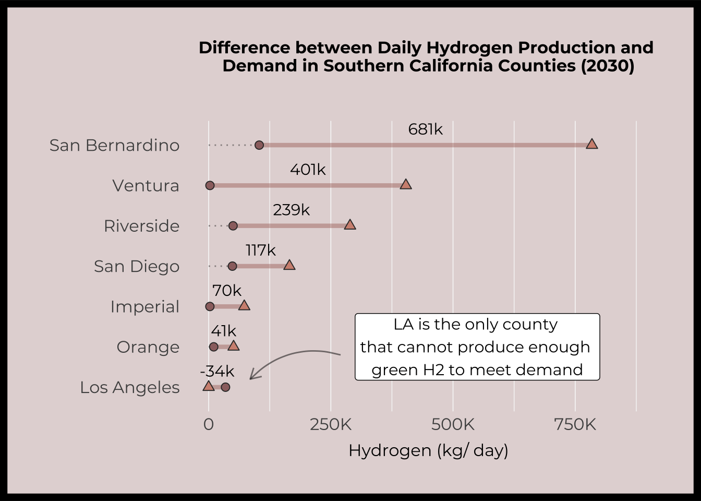

Vizualizing California’s Green Hydrogen Supply and Transportation Sector Demand
R
Quarto
Git
Spatial
Viz
Energy
Data viz for science communication
Author
Kristin Art
Published
March 6, 2024
Overview
I created the infographic above to explore the spatial distribution of hydrogen supply and demand across California in 2030. More specifically, I compared estimates of green (renewable) hydrogen production through wind- and solar-based electrolysis against projections of demand for hydrogen fuel (not necessarily renewable) from the transportation sector in 2030.
I developed the infographic to answer the following questions:
What is the spatial distribution of electrolytic hydrogen supply and transportation sector demand in 2030?
How does electrolytic supply and transportation sector demand for hydrogen fuel compare within and between regions in 2030? Will individual regions be able to produce enough hydrogen through electrolysis to meet local transportation sector demand?
Will individual counties in the Southern California region be able to produce enough hydrogen through electrolysis to meet local transportation sector demand?
Data
I used data developed during my year-long Master’s Group Project, which aims to analyze the parity between potential supply of hydrogen through renewable resources and demand from California’s transportation sector, which will be the earliest large-scale adopter of hydrogen fuel.
I used locational estimates of daily hydrogen production (kilograms/ day) through wind- or solar-based electrolysis that we developed by identifying renewable resource potential across space, excluding area unsuitable for renewable development, and siting electrolyzer (hydrogen production technology) facilities through an optimization model. I also used locational projections of transportation sector demand for hydrogen fuel in 2030 that were developed through a comprehensive technoeconomic study by the UC Davis Institute of Transportation Studies. 1 These data include the total quantities of hydrogen fuel (kilogram/ day) that will be demanded at future hydrogen re-fueling stations that will serve light-, medium-, and heavy-duty fuel cell electric vehicles (FCEV).
Design Approach
Graphic Form
It took a lot of exploratory data analysis and many draft figures to decide which graphic forms to use. I decided to display the actual spatial locations through a map and then explored many different aggregations and displays for the other components.
Code
# .........................S&D Map.........................# plot ----p2 <-# plotggplot() +geom_sf(data = ca_sf) +geom_sf(data = h2_counties_sf, aes(fill = region, shape ="Demand Center"), alpha =0.5, color ="transparent") +geom_sf(data = elect_demand, aes(size = demand_capacity_served), col ="grey40", alpha =0.7) +# scalescale_size(range =c(2, 5)) +geom_sf(data = elect_renewables2, aes(shape ="Production Site"), col ="black", size =2.5, alpha =0.7) +scale_fill_manual(values = pal_regions,breaks =c("Northern CA", "Central CA", "Coastal CA", "Southern CA"),guide ="none" ) +scale_x_continuous(limits =c(-125, -114)) +# add labels and annotationlabs(size ="Demand (kg/ day)",shape ="Location Type",title ="Spatial Distribution of H2 Production and Demand (2030)", ) +annotate(geom ="label",x =c(-123.8, -117, -122.1, -121.2),y =c(39.6, 36.7, 35.9, 33.3),label =c("Northern CA", "Central CA", "Coastal CA", "Southern CA"),color = pal_regions,size =4,color ="black",family ="mont",fontface ="bold",label.size =1 ) +# adjust themetheme_minimal() +theme(plot.title =element_text(size =11, family ="mont", face ="bold", color ="grey20"),plot.title.position ="plot",plot.subtitle =element_text(size =10, color ="grey50", family ="mont"),legend.title =element_text(size =10, family ="mont", face ="bold"),legend.text =element_text(size =9, family ="mont"),legend.position =c(0.78, 0.74),legend.background =element_rect(fill =alpha("grey97", 0.5), color ="grey80"),axis.title =element_blank(),axis.text =element_blank(),panel.grid =element_blank() ) +guides(size =guide_legend(order =2),shape =guide_legend(order =1, override.aes =list(color =c("grey50", "black"))) )p2

I let the story hidden in the data guide the final product, as the most interesting findings were related to whether Southern California could meet its high daily demand. Once I had nailed down the narrative, I experimented with which types of plots and shapes would look best stitched together into one figure.
Text
I used various text forms to explicitly state the story since most people are not familiar with the hydrogen space. I found it challenging to decide how much to explain since there is so much jargon related to this niche topic. Ultimately, I decided to include a substantial amount of background paragraphs to give the viewer meaningful context. I also used annotations on subplots to point out the most interesting results. I removed redundant axis labels and included meaningful titles for the subplots.
Themes, Colors, & Typography
I removed or lightened all the plot grid lines and used a white background for the infographic to reduce the amount of unnecessary ink included. I used the Montserrat font family throughout the infographic because my Master’s Group Project used it for our deliverables; that may be silly, but I found it really satisfying to stay consistent and also believe Montserrat invokes positive emotions and friendliness. I also used a slab serif, Alfa Slab One, to make the title stand out.
I developed a pleasing color palette by using coolors.co and made sure they were accessible for people with visual impairments through the website’s tools. I intentionally used the same 4 distinctive colors to represent the regions of California across all the subplots and increased their transparency at times to improve readability.
Code
## ~~~~~~~~~~~~~~~~~~~~~~~~~~~~~~~~~~~~~~~~~~~~~~~~~~~~~~~~~~~~~~~~~~~~~~~~~~~~~~## Data visualization ----## ~~~~~~~~~~~~~~~~~~~~~~~~~~~~~~~~~~~~~~~~~~~~~~~~~~~~~~~~~~~~~~~~~~~~~~~~~~~~~~# .........................Regional Histogram.........................# define background text ----p1_text <- glue::glue((" Hydrogen fuel (H2) can be produced by combining water and electricity through a process called electrolysis. When renewable electricity (new wind and solar) is used in this process, the resulting H2 is also considered renewable and referred to as green H2. H2 produced through most other processes have a negative environmental impact due to the release of carbon emissions or air pollutants. Both production and demand for H2 in California are expected to increase in coming years. The transportation sector is expected to be the earliest adopter of H2 for use in light-, medium- and heavy-duty fuel cell electric vehicles (FCEVs). Transportation demand is concentrated along major highways and within densely populated neighborhoods. Green H2 production is constrained to areas with sufficient wind and solar resources, water availability, and favorable permitting and regulation policies. Not all of these viable areas align with transportation demand hotspots, meaning H2 distribution (which can be costly) and production through other processes (which are not all renewable) may play an important role in some places. In 2030, Northern, Central, Coastal, and Southern CA will all be able to produce far more than enough green H2 to meet demand. Central and Northern CA will be the largest producers of electrolytic hydrogen while Southern CA will be the largest demander of H2 in transportation uses. All the excess green H2 produced can be stored for later use or distributed to areas in need."))#p1_text# pivot longer ----h2_regions_long <- h2_counties %>%rename(Demand = demand_h2_kg_d, Production = supply_h2_kg_d) %>%pivot_longer(cols = Demand:Production, values_to ="count", names_to ="type") %>%mutate(x =case_when( type =="Demand"~1, type =="Production"~2 ),region =as.factor(region) ) %>%group_by(region, type) %>%summarize(count =sum(count))# plot ----p1 <-# format data h2_regions_long %>%mutate(region =factor(region, levels = (c("Central CA", "Northern CA", "Coastal CA", "Southern CA"))),type =case_when( type =="Demand"~"Demand (kg/d)", type =="Production"~"Production (kg/d)" ),type =factor(type, levels =rev(c("Demand (kg/d)", "Production (kg/d)"))) ) %>%# plot and scaleggplot(aes(x = region, y = count, pattern = type)) +geom_col_pattern(fill = pal_regions2, position ="dodge", alpha =0.8, color ="grey0") +scale_pattern_manual(values =c("none", "wave")) +scale_pattern_fill_manual(values =c("black", "white")) +scale_y_continuous(expand =c(0.02, 0), labels = scales::label_number(scale_cut =cut_short_scale())) +expand_limits(y =max(7000000)) +# add labels and annotationannotate("label", x =3.4, y =5500000, label ="Southern CA will\ndemand the most\nH2 fuel", size =4, family ="mont") +annotate(geom ="curve",x =4.0, xend =4.25,y =5400000, yend =1500000,curvature =-0.5,arrow =arrow(length =unit(0.3, "cm")),alpha =0.5 ) +geom_text(aes(label = (c("82k", "5.9M","35k", "1.9M","46k", "4.9M","252k", "1.8M" ))), color ="black", vjust =-0.9, hjust =0.5, position =position_dodge(width =0.9), family ="mont", fontface ="bold") +labs(y ="", x ="", subtitle ="Regional Hydrogen Production and Demand (2030)", #title = (p1_text) ) +# adjust themetheme_minimal() +theme(#plot.title = element_text(size = 10, family = "mont", color = "grey20", margin = margin(b = 5, l = 20)),#plot.title.position = "plot",plot.subtitle =element_text(size =14, face ="bold", family ="mont", hjust =0.5, color ="grey20"),legend.title =element_blank(),legend.text =element_text(size =12, family ="mont"), #, margin = margin(r = -3, unit = "lines")legend.direction ="horizontal", legend.position ="top",legend.key.size =unit(0.5, "cm"),#axis.title = element_text(size = 14, family = "mont"),#axis.title.x = element_blank(),axis.text.x =element_text(size =14, family ="mont"),axis.text.y =element_blank(),panel.grid =element_blank(),aspect.ratio =0.4 ) +guides(fill =guide_legend(reverse =TRUE))p1

I would also like to color the region names in the text using those same 4 colors, but will have to do so when I have more time to troubleshoot the tension between my graphic device and element_markdown()displays…
General Design
I designed the overall layout of the canvas to create a visual hierarchy. Since most people read in an “F” or “E” formation, I placed the background text (which I want to be read first) on the very left-hand side and the deep-dive into Southern California counties (which I want to be read later on) on the right-hand side. I also bounded the latter in a bordered call-out box with the same background color as the Southern California region to signal to the viewer that it is an important deep dive. I also tried to limit the overall amount of ink used in plots when possible and isolated the text to a few key locations on the overall canvas.
Within the histogram plot, I ordered the regional values from highest to lowest production starting from the left-hand side; this allowed the fact that Southern CA has the lowest regional production to stand out in contrast to the text label that communicated Southern CA has the highest regional demand. In the dumbbell plot, I ordered the counties from largest to smallest difference starting from the top because I wanted to highlight the magnitude of the large differences first.
Code
# .........................SoCal Dumbbell Plot.........................# define text ----p3_text <- glue::glue(" In Southern California, most individual counties will be\ndaily net producers of green H2 in 2030. LA coungh is the only\none that cannot produce enough green H2 to meet its local\ntransportation demand. This means distribution of H2 from\nsurrounding counties may play an important role for them. This\ncould also mean that LA will rely on H2 from other production\npathways that have a higher environmental footprint than\nelectrolytic green H2.")# define function to rewrite values in shorthand format ----custom_number_format <-function(x) {ifelse(x >=1e6,gsub(" ", "", sprintf("%sM", format(round(x /1e6, 1), nsmall =1, big.mark =""))),gsub(" ", "", sprintf("%sk", format(round(x /1e3), big.mark =""))) )}# tidy data labels and values for dotted line in next plot ----socal_counties <- h2_counties %>%filter(county %in% southern_ca_counties) %>%mutate(difference_abbr = (custom_number_format(difference)),# difference_abbr = ifelse(difference_description == "more supply", "+282k", difference_abbr),difference_description =case_when( (supply_h2_kg_d - demand_h2_kg_d) >0~"more supply", (supply_h2_kg_d - demand_h2_kg_d) <0~"more demand" ),dotted_line =ifelse(difference_description =="more supply", demand_h2_kg_d, supply_h2_kg_d) ) %>%filter(county !="Santa Barbara")# plot ----p3 <-# plot socal_counties %>%ggplot() +geom_segment(aes(x =0, xend = dotted_line, y =reorder(county, difference), yend =reorder(county, difference)), alpha =0.4, linetype ="dotted", linewidth =0.5) +geom_segment(aes(x = demand_h2_kg_d, xend = supply_h2_kg_d, y =reorder(county, difference), yend =reorder(county, difference), linetype ="Difference"), alpha =0.4, linewidth =1.5, color ="#A05F54") +geom_point(aes(x = supply_h2_kg_d, y =reorder(county, difference), shape ="Production"), size =2.5, fill ="#D19180", color ="grey20") +geom_point(aes(x = demand_h2_kg_d, y =reorder(county, difference), shape ="Demand"), size =2.5, fill ="#9C6F6F", color ="grey20") +# scalescale_shape_manual(values =c("Production"=24, "Demand"=21), breaks =c("Production", "Demand")) +scale_x_continuous(labels = scales::label_number(scale_cut =cut_short_scale()), limits =c(0, 900000)) +# add labelslabs(y ="", x ="Hydrogen (kg/ day)", subtitle ="Difference between Daily Hydrogen Production and \nDemand in Southern California Counties (2030)"#, title = p3_text ) +geom_text(aes(x = (demand_h2_kg_d + supply_h2_kg_d) /2,y =reorder(county, difference),label = difference_abbr,family ="mont", ),position =position_nudge(y =0.4),show.legend =FALSE,size =4 ) +# adjust themetheme_minimal() +theme(#plot.title = element_text(size = 9, hjust = 0, family = "mont", margin = margin(b = 20)),#plot.title.position = "plot",plot.subtitle =element_text(size =12, hjust =0.5, family ="mont", face ="bold", margin =margin(b =10)),legend.title =element_blank(),legend.text =element_text(size =10, family ="mont", face ="bold"),legend.direction ="horizontal",legend.position ="top",legend.justification =c(4, 0),legend.spacing.x =unit(-0, "lines"),legend.margin =margin(-5, -5, 0, 0),axis.title =element_text(size =12, family ="mont"),axis.title.x =element_text(family ="mont", margin =margin(t =8)),axis.text =element_text(size =12, family ="mont"),axis.text.y =element_text(size =12, family ="mont"),panel.grid =element_line(color ="grey97"),panel.grid.major.y =element_blank(),panel.grid.major.x =element_line(linewidth =0.3),plot.background =element_rect(colour ="black", fill =alpha("#9C6F6F", 0.3), size =5),plot.margin =margin(t =30, b =30, r =22, l =22),aspect.ratio =0.6 ) +guides(linetype =guide_legend(order =1, override.aes =list(x =-5, y =1)),shape =guide_legend(order =2, override.aes =list(values =c(), fill =c("#D19180", "#9C6F6F"), shape =c(24, 21))) ) +# add annotationcoord_cartesian(clip ="off") +annotate("label", x =550000, y =2, label ="LA is the only county \nthat cannot produce enough \ngreen H2 to meet demand", size =4, family ="mont") +annotate(geom ="curve",x =270000, xend =85000,y =1.8, yend =1.2,curvature =0.3,arrow =arrow(length =unit(0.3, "cm")),alpha =0.5 )p3

Code
# add to blank plot to create white space ----# p3 <- ggplot() +# theme_void() +# theme(# plot.margin = margin(t = 20, r = 5, b = 20, l = 5, "pt")# ) +# inset_element(p3, left = 0.02, bottom = 0.05, right = 0.95, top = 0.98, align_to = "full")#p3
Contextualization and DEI
I intend for this infographic to be used in a personal blog post about my Master’s Group Project, meaning that it will be combined with additional text that explains the caveats, implications, and findings of that project in greater detail. With this in mind, I only included a moderate amount of contextualization in the figure itself and did not discuss the equity considerations about hydrogen production and use. The purpose of the infographic itself is just to convey the spatial distribution of potential supply and demand to highlight the fact that all of the 2030 transportation sector demand can be met by electrolytic hydrogen alone.
Footnotes
Fulton, L.; Jenn, A.; Yang, C.; Burke, A.; Acharya, T.; Li, X., et al. (2023). California Hydrogen Analysis Project: The Future Role of Hydrogen in a Carbon-Neutral California: Final Synthesis Modeling Report. UC Davis: Hydrogen Pathways Program. Retrieved from https://escholarship.org/uc/item/27m7g841↩︎